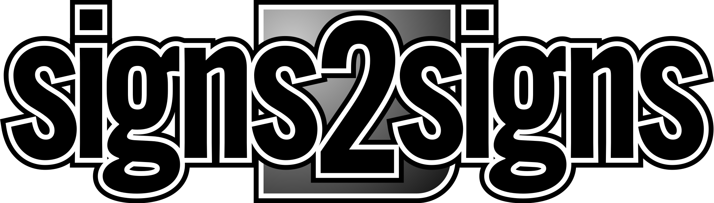

<header class="site-head">
  <style>
    .site-head{
      position:sticky; top:0; z-index:50;
      background:rgba(10,15,28,.7);
      backdrop-filter:blur(12px);
      -webkit-backdrop-filter:blur(12px); /* Safari */
      border-bottom:1px solid rgba(255,255,255,.06);
      margin-inline: calc(-1 * var(--gutter));
      padding-inline: var(--gutter);
    }

    .nav{
      display:flex;
      align-items:center;
      gap:24px;
      padding:14px 0;
    }

    .logo{
      display:flex;
      align-items:center;
      gap:12px;
    }

    nav{ margin-left:auto; }

    nav ul{
      display:flex;
      gap:16px;
      list-style:none;
      margin:0;
      padding:0;
    }

    nav a{
      color:#e5e7eb;
      font-weight:700;
      padding:10px 14px;
      border-radius:12px;
      text-decoration:none;
    }

    nav a:hover{
      background:rgba(255,255,255,.08);
    }

    .cta{
      margin-left:8px;
      background:var(--accent);
      color:#0b0b0b;
      padding:10px 16px;
      border-radius:10px;
      font-weight:700;
    }

    /* --- Mobile: only logo centred --- */
    @media (max-width:640px){
      nav{ display:none; }             /* hide menu */
      .nav{ justify-content:center; }  /* centre the logo */
    }
  </style>

  <div class="container nav">
    <a class="logo" href="/" aria-label="Go to Signs2Signs home">
      
    </a>
    <nav aria-label="Primary">
      <ul>
        <li><a href="services.html">Services</a></li>
             <li><a href="blog.html">Blog</a></li>
        <li><a href="gallery.html">Gallery</a></li>
        <li><a href="contact.html#quote" class="cta">Get a Quote</a></li>
      </ul>
    </nav>
  </div>
</header>
